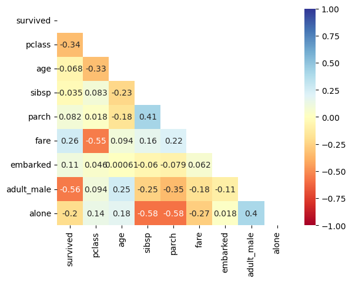

import seaborn as sns
import matplotlib.pyplot as plt
import numpy as np
import pandas as pd타이타닉 데이터 분석
- RMS 타이타닉은 영국의 화이트 스타 라인이 운영한 북대서양 횡단 여객선으로, 1912년 4월 10일 첫 출항하였다. 영국의 사우샘프턴을 떠나 미국의 뉴욕으로 향하던 중에 4월 15일 빙산과 충돌하여 침몰하였으며, 이로 인해 1,514명이 사망한 것으로 알려져 있다.
- 타이타닉 데이터를 분석하여 생존에 영향을 준 요인을 파악하고, 이를 바탕으로 생존 여부를 예측하는 모델을 학습해보자.
#데이터 불러오기
df=sns.load_dataset('titanic')
df.head()| survived | pclass | sex | age | sibsp | parch | fare | embarked | class | who | adult_male | deck | embark_town | alive | alone | |
|---|---|---|---|---|---|---|---|---|---|---|---|---|---|---|---|
| 0 | 0 | 3 | male | 22.0 | 1 | 0 | 7.2500 | S | Third | man | True | NaN | Southampton | no | False |
| 1 | 1 | 1 | female | 38.0 | 1 | 0 | 71.2833 | C | First | woman | False | C | Cherbourg | yes | False |
| 2 | 1 | 3 | female | 26.0 | 0 | 0 | 7.9250 | S | Third | woman | False | NaN | Southampton | yes | True |
| 3 | 1 | 1 | female | 35.0 | 1 | 0 | 53.1000 | S | First | woman | False | C | Southampton | yes | False |
| 4 | 0 | 3 | male | 35.0 | 0 | 0 | 8.0500 | S | Third | man | True | NaN | Southampton | no | True |
df.info()<class 'pandas.core.frame.DataFrame'>
RangeIndex: 891 entries, 0 to 890
Data columns (total 15 columns):
# Column Non-Null Count Dtype
--- ------ -------------- -----
0 survived 891 non-null int64
1 pclass 891 non-null int64
2 sex 891 non-null object
3 age 714 non-null float64
4 sibsp 891 non-null int64
5 parch 891 non-null int64
6 fare 891 non-null float64
7 embarked 889 non-null object
8 class 891 non-null category
9 who 891 non-null object
10 adult_male 891 non-null bool
11 deck 203 non-null category
12 embark_town 889 non-null object
13 alive 891 non-null object
14 alone 891 non-null bool
dtypes: bool(2), category(2), float64(2), int64(4), object(5)
memory usage: 80.7+ KB#데이터 전처리:결측값 확인
df.isna().sum()survived 0
pclass 0
sex 0
age 177
sibsp 0
parch 0
fare 0
embarked 2
class 0
who 0
adult_male 0
deck 688
embark_town 2
alive 0
alone 0
dtype: int64중복 데이터 선택
data=df.copy()
data=data.drop(columns=['alive','class','who','sex','embark_town'])
data.head()| survived | pclass | age | sibsp | parch | fare | embarked | adult_male | deck | alone | |
|---|---|---|---|---|---|---|---|---|---|---|
| 0 | 0 | 3 | 22.0 | 1 | 0 | 7.2500 | S | True | NaN | False |
| 1 | 1 | 1 | 38.0 | 1 | 0 | 71.2833 | C | False | C | False |
| 2 | 1 | 3 | 26.0 | 0 | 0 | 7.9250 | S | False | NaN | True |
| 3 | 1 | 1 | 35.0 | 1 | 0 | 53.1000 | S | False | C | False |
| 4 | 0 | 3 | 35.0 | 0 | 0 | 8.0500 | S | True | NaN | True |
결측값 처리
# deck:갚판 데이터는 결측값이 너무 많아 의미 없다 판단함
data=data.drop(columns='deck')
data.describe()| survived | pclass | age | sibsp | parch | fare | |
|---|---|---|---|---|---|---|
| count | 891.000000 | 891.000000 | 714.000000 | 891.000000 | 891.000000 | 891.000000 |
| mean | 0.383838 | 2.308642 | 29.699118 | 0.523008 | 0.381594 | 32.204208 |
| std | 0.486592 | 0.836071 | 14.526497 | 1.102743 | 0.806057 | 49.693429 |
| min | 0.000000 | 1.000000 | 0.420000 | 0.000000 | 0.000000 | 0.000000 |
| 25% | 0.000000 | 2.000000 | 20.125000 | 0.000000 | 0.000000 | 7.910400 |
| 50% | 0.000000 | 3.000000 | 28.000000 | 0.000000 | 0.000000 | 14.454200 |
| 75% | 1.000000 | 3.000000 | 38.000000 | 1.000000 | 0.000000 | 31.000000 |
| max | 1.000000 | 3.000000 | 80.000000 | 8.000000 | 6.000000 | 512.329200 |
#S( Southampton)에서 사람이 제일 많았다
cnd=data['embarked'].value_counts()
pd.DataFrame(cnd)| count | |
|---|---|
| embarked | |
| S | 644 |
| C | 168 |
| Q | 77 |
#결측값인 탑승항구는 제일 사람이 많았던 Southampton으로 처리하고, age는 중앙값과 평균값의 사이인 29살로 처리함
data['age']=data['age'].fillna(29)
data['embarked']=data['embarked'].fillna('S')
data.isna().sum()survived 0
pclass 0
age 0
sibsp 0
parch 0
fare 0
embarked 0
adult_male 0
alone 0
dtype: int64#데이터를 자료형에서 숫자형으로 바꾼다
dict_em={'S':0,'C':1,'Q':2}
dict_ma={False:0,True:1}
dict_al={False:0,True:1}
data['embarked'] = data['embarked'].map(dict_em)
data['adult_male'] = data['adult_male'].map(dict_ma)
data['alone'] = data['alone'].map(dict_al)
data.head()| survived | pclass | age | sibsp | parch | fare | embarked | adult_male | alone | |
|---|---|---|---|---|---|---|---|---|---|
| 0 | 0 | 3 | 22.0 | 1 | 0 | 7.2500 | 0 | 1 | 0 |
| 1 | 1 | 1 | 38.0 | 1 | 0 | 71.2833 | 1 | 0 | 0 |
| 2 | 1 | 3 | 26.0 | 0 | 0 | 7.9250 | 0 | 0 | 1 |
| 3 | 1 | 1 | 35.0 | 1 | 0 | 53.1000 | 0 | 0 | 0 |
| 4 | 0 | 3 | 35.0 | 0 | 0 | 8.0500 | 0 | 1 | 1 |
학습/평가 데이터 분할
- 학습 데이터와 평가 데이터를 7:3 비율로 분할
X=data.drop(columns='survived') # feature
y=data['survived']# target
from sklearn.model_selection import train_test_split
X_train,X_test,y_train,y_test=train_test_split(X,y,test_size=0.3,random_state=42)X_train.info()<class 'pandas.core.frame.DataFrame'>
Index: 623 entries, 445 to 102
Data columns (total 8 columns):
# Column Non-Null Count Dtype
--- ------ -------------- -----
0 pclass 623 non-null int64
1 age 623 non-null float64
2 sibsp 623 non-null int64
3 parch 623 non-null int64
4 fare 623 non-null float64
5 embarked 623 non-null int64
6 adult_male 623 non-null int64
7 alone 623 non-null int64
dtypes: float64(2), int64(6)
memory usage: 43.8 KBcorr_df=data.corr()
df_up=np.triu(corr_df)
sns.heatmap(corr_df,mask=df_up, annot=True, cmap='RdYlBu', vmin=-1, vmax=1)
plt.show()
히트맵으로 보아 생존률은 pclass(객실 등급)가 높을 수록, fare(요금)가 높을 수록, 혼자 탄 사람일 때,남성이 아닐 때 높은 것을 보인다.
emabarked(탑승 항구)는 상관관계가 있는 것으로 보이나 생존과는 인과관계가 없는 것으로 보이므로 배제한다
객실 등급과 요금은 안전 요원이나 선원의 도움을 많이 받았을 것으로 예측된다
남성이 아닌 경우에는 위험 상황일 때 여성이나 아동을 먼저 구출하는 영향으로 인한 것으로 보인다
혼자 탄 사람인 경우에는 대피시에 그렇지 않은 사람보다 신경 쓸게 상대적으로 적어서 그런 것으로 보인다
따라서 중위 주택 가격을 예측하는 특성(feature)으로 해당 변수를 선택했다
회귀모델 학습 및 평가
#최적의 k 값 선택
from sklearn.neighbors import KNeighborsClassifier
from sklearn.model_selection import cross_val_score
k_range = range(1, 70)
k_scores=[]
for k in k_range:
knn = KNeighborsClassifier(n_neighbors=k)
scores=cross_val_score(knn, X_train, y_train, cv=5, scoring='accuracy')
k_scores.append(scores.mean())
print(f'k={k}일때 정확도 : {scores.mean(): .3f}')k=1일때 정확도 : 0.664
k=2일때 정확도 : 0.668
k=3일때 정확도 : 0.677
k=4일때 정확도 : 0.671
k=5일때 정확도 : 0.679
k=6일때 정확도 : 0.695
k=7일때 정확도 : 0.714
k=8일때 정확도 : 0.684
k=9일때 정확도 : 0.703
k=10일때 정확도 : 0.700
k=11일때 정확도 : 0.697
k=12일때 정확도 : 0.700
k=13일때 정확도 : 0.708
k=14일때 정확도 : 0.698
k=15일때 정확도 : 0.701
k=16일때 정확도 : 0.722
k=17일때 정확도 : 0.709
k=18일때 정확도 : 0.706
k=19일때 정확도 : 0.695
k=20일때 정확도 : 0.703
k=21일때 정확도 : 0.703
k=22일때 정확도 : 0.705
k=23일때 정확도 : 0.701
k=24일때 정확도 : 0.701
k=25일때 정확도 : 0.700
k=26일때 정확도 : 0.700
k=27일때 정확도 : 0.689
k=28일때 정확도 : 0.676
k=29일때 정확도 : 0.684
k=30일때 정확도 : 0.679
k=31일때 정확도 : 0.685
k=32일때 정확도 : 0.682
k=33일때 정확도 : 0.685
k=34일때 정확도 : 0.681
k=35일때 정확도 : 0.689
k=36일때 정확도 : 0.673
k=37일때 정확도 : 0.679
k=38일때 정확도 : 0.679
k=39일때 정확도 : 0.682
k=40일때 정확도 : 0.676
k=41일때 정확도 : 0.689
k=42일때 정확도 : 0.682
k=43일때 정확도 : 0.682
k=44일때 정확도 : 0.674
k=45일때 정확도 : 0.679
k=46일때 정확도 : 0.676
k=47일때 정확도 : 0.676
k=48일때 정확도 : 0.679
k=49일때 정확도 : 0.676
k=50일때 정확도 : 0.674
k=51일때 정확도 : 0.677
k=52일때 정확도 : 0.671
k=53일때 정확도 : 0.673
k=54일때 정확도 : 0.666
k=55일때 정확도 : 0.674
k=56일때 정확도 : 0.665
k=57일때 정확도 : 0.668
k=58일때 정확도 : 0.661
k=59일때 정확도 : 0.666
k=60일때 정확도 : 0.660
k=61일때 정확도 : 0.669
k=62일때 정확도 : 0.663
k=63일때 정확도 : 0.668
k=64일때 정확도 : 0.668
k=65일때 정확도 : 0.663
k=66일때 정확도 : 0.666
k=67일때 정확도 : 0.663
k=68일때 정확도 : 0.673
k=69일때 정확도 : 0.668# 모델 성능이 가장 좋은 k 값 선택
best_k = k_range[k_scores.index(max(k_scores))]
print(f"최적의 k 값은 {best_k}이며, 평균 정확도는 {max(k_scores):.3f}")최적의 k 값은 16이며, 평균 정확도는 0.722# K-NN 분류모델 생성 및 학습
knn = KNeighborsClassifier(n_neighbors=best_k)
knn.fit(X_train,y_train)
#학습 데이터로 학습한 회귀모델에 평가데이터를 입력하여 클래스 분류
y_pred = knn.predict(X_test)
#분류모델 평가 : 정확도, 정밀도, 재현도
from sklearn.metrics import accuracy_score, precision_score, recall_score
y_pred = knn.predict(X_test)
accuracy = accuracy_score(y_test, y_pred)
precision = precision_score(y_test, y_pred, average='micro')
recall = recall_score(y_test, y_pred, average='micro')
print(f"정확도 : {accuracy:.3f}")
print(f"정밀도 : {accuracy:.3f}")
print(f"재현도 : {accuracy:.3f}")정확도 : 0.709
정밀도 : 0.709
재현도 : 0.709